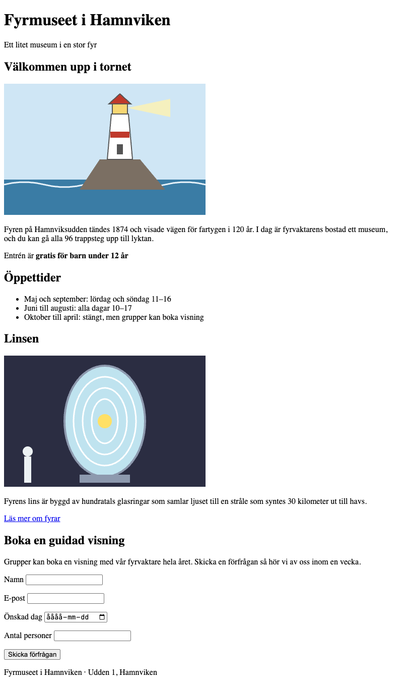

Övning R3 · Validera och gör tillgängligt
Läs så här: Välj en nivå per etapp: 🟢 Grön ger dig varje steg, 🔵 Blå säger vad som behövs men inte koden, 🔴 Röd ger bara kravet. Etapperna är desamma på alla nivåer, så du kan byta nivå mellan etapperna (och mitt i om du fastnar). Varje etapp slutar med Så vet du att etappen är klar: kontrollera den innan du går vidare. Längst ner finns Vanliga fel och, om du vill ha mer, ⚫ Svart.
Du bygger: Fyrmuseet i Hamnviken har en sida som ser hel ut i Chrome, men koden har 8 fel. Du hittar dem med W3C-validatorn, ett gratis verktyg på nätet som läser din HTML och jämför den med reglerna för HTML (W3C är organisationen som skriver reglerna). Validatorn hittar sju av felen. Det åttonde är en tillgänglighetsbrist, något som gör sidan svårare att använda med skärmläsare eller tangentbord, och den hittar du själv. När du är klar säger validatorn att sidan är felfri, och sidan följer det du kan om WCAG från Interaktionsdesign: alt-texter, rubriker i ordning, etiketter på alla fält och sidans språk.

Du behöver: mappen ovningar öppen i VS Code, Live Server och Chrome. Mappen r3-start, som ligger som zip-fil bredvid den här övningen i Learnpoint. Internet (validatorn finns på validator.w3.org).
Etapp 1 · Hämta sidan och titta
Varför: du behöver veta hur sidan ser ut innan du ändrar något, så att du märker vad som blir annorlunda.
🟢 Grön · Steg för steg
- Hämta
r3-start.zipfrån Learnpoint och packa upp den. På Mac dubbelklickar du på zip-filen. På Windows högerklickar du och väljer Extrahera alla (Extract All). - Dra mappen
r3-startfrån Finder (Mac) eller Utforskaren (Windows) och släpp den på OVNINGAR i filpanelen i VS Code. I mappen liggerindex.htmloch en mappbildermed två bilder. - Högerklicka på
index.htmlunderr3-startoch välj Open with Live Server. - Titta på fliken i Chrome. Där står adressen, inte ett namn på sidan. Det är en ledtråd.
- Titta på Läs mer om fyrar under bilden på linsen. Det ser inte ut som en länk, och det händer inget när du klickar. Ännu en ledtråd.
- Öppna
r3-start/index.htmli VS Code. Radnumren som står i den här övningen gäller filen som den ser ut nu, innan du ändrat något.
🔵 Blå · Med ledtrådar
Packa upp r3-start.zip från Learnpoint, lägg mappen r3-start i ovningar och öppna r3-start/index.html med Live Server. Titta särskilt på fliken i Chrome, på länken under bilden på linsen och på vad som händer när du klickar på etiketterna i formuläret.
🔴 Röd · Bara kravet
Öppna startfilen i Chrome och se vad som ser fel ut eller inte fungerar innan du ändrar något.
/r3-start/index.html. Du har sett att fliken inte har något namn och att Läs mer om fyrar inte går att klicka på.Etapp 2 · Kör validatorn
Varför: validatorn hittar fel som Chrome tyst rättar till åt dig, och som andra webbläsare och skärmläsare kanske inte rättar på samma sätt.
🟢 Grön · Steg för steg
- Öppna en ny flik i Chrome och gå till
validator.w3.org. - Klicka på fliken Validate by File Upload.
- Klicka på Choose File (Välj fil). Gå till mappen
ovningar(i Dokument, om du följde Övning T1), sedanr3-start, och väljindex.html. - Klicka på Check.
- Du får en lista med meddelanden på engelska. Varje meddelande har:
- en typ: Error (fel, måste rättas), Warning (varning, bör rättas) eller Info (bara information)
- en text som beskriver felet
- var felet finns: From line 5, column 3; to line 5, column 9 betyder rad 5 i filen
- ett utdrag ur koden där felet är markerat med gult
- Räkna: listan har 8 Error och 1 Warning. Tre av felen står på samma rad (rad 20), eftersom ett fel kan ge flera meddelanden.
- Lägg märke till ordningen: de två sista meddelandena gäller rad 2 och rad 23, fast de står sist. Validatorn gör vissa kontroller efter resten.
Om filuppladdningen krånglar kan du i stället använda fliken Validate by Direct Input: markera allt i filen i VS Code (Cmd+A på Mac, Ctrl+A på Windows), kopiera (Cmd+C / Ctrl+C), klistra in i rutan på validatorn och klicka Check.
Förstår du inte ett meddelande får du klistra in det i en AI-chatt och be om en förklaring på svenska. Rättningen gör du själv.
🔵 Blå · Med ledtrådar
Gå till validator.w3.org och ladda upp r3-start/index.html under Validate by File Upload. Läs varje meddelande: typen (Error, Warning, Info), texten och radnumret. Räkna hur många Error och Warning det är.
🔴 Röd · Bara kravet
Validera startfilen i W3C-validatorn och ta reda på vilka fel den hittar.
Etapp 3 · Rätta felen i början av filen
Varför: ett fel tidigt i filen kan ge följdfel längre ner, så du rättar uppifrån och validerar igen.
🟢 Grön · Steg för steg
- Titeln saknas. Meddelandet Element "head" is missing a required instance of child element "title" betyder att
<head>saknar<title>. Klicka sist på rad 4, efter<meta charset="utf-8">, tryck Enter och skriv:
<title>Fyrmuseet i Hamnviken</title>Nu flyttas alla rader under ett steg ned. Därför står radnumret i startfilen inom parentes i stegen nedan.
- Bilden saknar alt-text. Meddelandet An "img" element must have an "alt" attribute gäller bilden på fyren (rad 14 i startfilen). Alt-texten är texten som ersätter bilden för den som inte ser den, till exempel när en skärmläsare läser upp sidan eller när bilden inte laddas (WCAG kallar det textalternativ). Den ska säga vad bilden visar, utan "bild av". Byt raden
<img src="bilder/fyren.svg">mot:
<img src="bilder/fyren.svg" alt="En vit fyr med rött tak på en klippa vid havet">Raden är lång, så Prettier delar upp den på flera rader när du sparar. Det är bara formatering.
- Taggarna stängs i fel ordning. De tre meddelandena på rad 20 i startfilen (End tag "p" seen, but there were open elements, Unclosed element "strong" och No "strong" element in scope but a "strong" end tag seen) är samma fel:
<strong>öppnas inuti<p>, men</p>står före</strong>. Det element som öppnades sist ska stängas först. Byt raden
<p>Entrén är <strong>gratis för barn under 12 år</p></strong>mot
<p>Entrén är <strong>gratis för barn under 12 år</strong></p>- Spara. Validera igen: klicka på Choose File och välj
index.htmlpå nytt (validatorn läser filen när du väljer den, så du måste välja den igen efter varje ändring), och klicka Check.
🔵 Blå · Med ledtrådar
Rätta de fel som gäller rad 5, 14 och 20 i startfilen: head saknar ett title-element, bilden på fyren saknar attributet alt (beskriv vad bilden visar), och på rad 20 stängs två element i fel ordning (det som öppnades sist ska stängas först). Tre meddelanden på samma rad kan vara ett enda fel. Spara och validera igen. Välj filen på nytt i validatorn varje gång.
🔴 Röd · Bara kravet
Rätta felen som validatorn hittar i första halvan av filen, till och med rad 20, och validera igen.
Etapp 4 · Rätta felen längre ner
Varför: rubriker, länkar och etiketter är det som gör att man kan hitta och använda sidan, och här är alla tre trasiga.
🟢 Grön · Steg för steg
- Rubriken hoppar en nivå. Meddelandet The heading "h4" (with computed level 4) follows the heading "h2" (with computed level 2), skipping 1 heading level gäller Öppettider (rad 23 i startfilen). Öppettider är ett eget avsnitt, precis som Välkommen upp i tornet och Linsen, så rubriken ska vara en
h2. Byt<h4>Öppettider</h4>mot:
<h2>Öppettider</h2>(En h3 skulle få validatorn att tystna, men den vore fel ändå: då skulle Öppettider se ut som en del av avsnittet om tornet.)
- Länken har ett felstavat attribut. Meddelandet Attribute "herf" not allowed on element "a" at this point (rad 40 i startfilen) betyder att
hrefär stavatherf. Utanhrefvet länken inte vart den ska. Byt raden mot:
<p><a href="https://sv.wikipedia.org/wiki/Fyr">Läs mer om fyrar</a></p>- Etiketten pekar på ett fält som inte finns. Meddelandet The value of the "for" attribute of the "label" element must be the ID of a non-hidden form control (rad 58 i startfilen) betyder att etiketten har
for="datum", men fältet harid="besoksdag". Byt raden<label for="datum">Önskad dag</label>mot:
<label for="besoksdag">Önskad dag</label>- Spara och validera igen (välj filen på nytt).
🔵 Blå · Med ledtrådar
Rätta felen på rad 23, 40 och 58 i startfilen: en rubrik hoppar över en nivå (fundera på vilken nivå avsnittets rubrik ska ha jämfört med de andra avsnitten), ett attribut på länken är felstavat, och en etikett har ett for som inte matchar fältets id. Spara och validera igen.
🔴 Röd · Bara kravet
Rätta resten av felen som validatorn kallar Error och validera igen.
Etapp 5 · Varningen och felet som validatorn inte ser
Varför: validatorn kontrollerar reglerna för HTML, inte om sidan går att använda, så den sista kontrollen gör du själv.
🟢 Grön · Steg för steg
- Sidans språk saknas. Varningen Consider adding a "lang" attribute to the "html" start tag to declare the language of this document gäller rad 2. Attributet
langtalar om vilket språk sidan är skriven på. Utan det gissar skärmläsaren, och läser den svensk text med engelskt uttal blir den svår att förstå (WCAG kräver att sidans språk anges). Byt<html>mot:
<html lang="sv">- Ett fält saknar etikett. Klicka på texten Antal personer i Chrome. Markören hamnar inte i rutan. Texten står bara bredvid fältet och är inte kopplad till det, så en skärmläsare läser upp fältet som "redigera nummer" utan att säga vad det gäller. Validatorn kan inte veta att texten var tänkt som etikett, därför säger den inget. Byt raden
Antal personer(rad 62 i startfilen) mot:
<label for="antal">Antal personer</label>- Kontrollera alla etiketter: klicka på Namn, E-post, Önskad dag och Antal personer i Chrome. Markören ska hamna i rätt fält varje gång.
- Kontrollera rubrikerna: läs bara rubrikerna uppifrån och ned. Fyrmuseet i Hamnviken (
h1), sedan Välkommen upp i tornet, Öppettider, Linsen och Boka en guidad visning (allah2). Ingen nivå hoppas över. - Kontrollera alt-texterna: bilden på fyren har den alt-text du skrev, och bilden på linsen har en som redan beskriver bilden.
- Spara.
🔵 Blå · Med ledtrådar
Rätta varningen: html saknar attributet lang (värdet för svenska är sv). Leta sedan upp felet som validatorn inte hittar: klicka på varje etikett i formuläret och se om markören hamnar i fältet. Ett av fälten har bara en vanlig text bredvid sig i stället för en label med for. Läs till sist igenom rubrikerna och alt-texterna.
🔴 Röd · Bara kravet
Rätta varningen. Hitta och rätta sedan det åttonde felet, som validatorn inte hittar: alla fält ska ha en etikett, rubrikerna ska komma i ordning och alla bilder ska ha en alt-text som beskriver bilden.
<html> har lang="sv".Etapp 6 · Validera tills det är grönt
Varför: en sida som validerar utan fel är ett av kraven i projektet, och nu vet du hur du kontrollerar det.
🟢 Grön · Steg för steg
- Spara filen i VS Code.
- Validera en sista gång: Choose File, välj
index.htmlpå nytt, Check. - Inga rader märkta Error eller Warning ska finnas kvar. I stället står det Document checking completed. No errors or warnings to show. eller The document validates according to the specified schema(s).
- Står det rader märkta Info med texten Trailing slash on void elements has no effect… kan du strunta i dem. De kommer från att Prettier lägger till
/sist i<meta>,<img>och<input>när du sparar. Det är tillåtet och betyder samma sak. - Hela filen ser ut så här (utan Prettiers
/):
<!doctype html>
<html lang="sv">
<head>
<meta charset="utf-8">
<title>Fyrmuseet i Hamnviken</title>
</head>
<body>
<header>
<h1>Fyrmuseet i Hamnviken</h1>
<p>Ett litet museum i en stor fyr</p>
</header>
<main>
<section>
<h2>Välkommen upp i tornet</h2>
<img
src="bilder/fyren.svg"
alt="En vit fyr med rött tak på en klippa vid havet"
>
<p>
Fyren på Hamnviksudden tändes 1874 och visade vägen för fartygen i 120
år. I dag är fyrvaktarens bostad ett museum, och du kan gå alla 96
trappsteg upp till lyktan.
</p>
<p>Entrén är <strong>gratis för barn under 12 år</strong></p>
</section>
<section>
<h2>Öppettider</h2>
<ul>
<li>Maj och september: lördag och söndag 11–16</li>
<li>Juni till augusti: alla dagar 10–17</li>
<li>Oktober till april: stängt, men grupper kan boka visning</li>
</ul>
</section>
<section>
<h2>Linsen</h2>
<img
src="bilder/linsen.svg"
alt="Fyrens lins: en glaskupa lika hög som en vuxen, byggd av ringar av glas"
>
<p>
Fyrens lins är byggd av hundratals glasringar som samlar ljuset till
en stråle som syntes 30 kilometer ut till havs.
</p>
<p><a href="https://sv.wikipedia.org/wiki/Fyr">Läs mer om fyrar</a></p>
</section>
<section>
<h2>Boka en guidad visning</h2>
<p>
Grupper kan boka en visning med vår fyrvaktare hela året. Skicka en
förfrågan så hör vi av oss inom en vecka.
</p>
<form>
<p>
<label for="namn">Namn</label>
<input type="text" id="namn" required>
</p>
<p>
<label for="epost">E-post</label>
<input type="email" id="epost" required>
</p>
<p>
<label for="besoksdag">Önskad dag</label>
<input type="date" id="besoksdag">
</p>
<p>
<label for="antal">Antal personer</label>
<input type="number" id="antal">
</p>
<p>
<button>Skicka förfrågan</button>
</p>
</form>
</section>
</main>
<footer>
<p>Fyrmuseet i Hamnviken · Udden 1, Hamnviken</p>
</footer>
</body>
</html>🔵 Blå · Med ledtrådar
Spara och validera en sista gång. Inga Error och inga Warning får finnas kvar. Info-rader om Trailing slash kommer från Prettier och kan lämnas.
🔴 Röd · Bara kravet
Sidan ska validera utan Error och Warning.
⚫ Svart · Utöka (frivilligt, utan facit)
Chrome har en egen tillgänglighetskontroll. Öppna DevTools, välj fliken Lighthouse (finns den inte: klicka på » bredvid flikarna), kryssa bara i Accessibility och klicka Analyze page load. Vad säger den om startfilen r3-start som validatorn inte sa, och vad säger den om din rättade sida? Ta en kopia av startfilen innan du rättar om du vill jämföra.
Vanliga fel
- Validatorn visar samma fel som förut, fast du har rättat, eller Chrome visar ERR_UPLOAD_FILE_CHANGED: validatorn läser filen när du väljer den med Choose File. Spara i VS Code, välj filen på nytt och klicka Check igen.
- Det dyker upp nya fel efter att du rättat ett: ofta har du bytt en starttagg men inte sluttaggen, eller tvärtom. Läs det nya meddelandet och titta på raden det pekar på. Kom ihåg att radnumren flyttas när du lägger till rader, och att ett enda fel kan ge flera meddelanden.
- Prettier gör ingenting när du sparar: Prettier kan inte formatera en fil där taggarna inte går ihop, som i startfilen (rad 20). När felet är rättat formaterar Prettier igen. Det är också därför raderna kan bli fler när du sparar: Prettier delar upp långa rader.